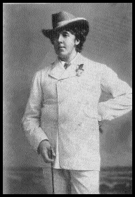

WilyWalnut.com
Meet the Genius in YOUR Brain!
HOME - IQ TESTS - CREATIVITY - GENIUS - BRAIN STORMING - BLOG GayThink - why a little "limp wristed" thinking can bamboozle your brain cells into a riot of creative excellence!(You don't have to be a screaming queen to think pink for a day!)It's true! Camping it up is going to turn you into a bona fide brainbuilder! Your brain will soon be oiled, pumped and ready to strut! Not every gay man is a genius but a fair number of geniuses have been gay. Among those, Leonardo da Vinci, Alexander the Great, Oscar Wilde and many others that kept it hidden from history's record books. Traditionally boys who followed 'artistic' careers in theatre, painting, dancing or design were thought to be poofs, fairies or queer. Somehow the idea of sensitivity, creativity and wild thinking got associated with homosexuality. I guess those who were willing and driven to be different in their sexuality were also driven or willing to be different in their thinking too. My Aunt Lorraine said, "Bob, you're gay. Are you seeing a psychiatrist?" I said, "No, I'm seeing a
lieutenant in the Navy." Maybe those who are more right-brained dominant are more open to a pantheistic idea of sexuality. The right brain, which sees things wholistically and likes to make all kinds of connections, can cross boundaries more fluidly than the left brain. I'm sure there are lots of gay scientists, but I can't see the more obviously anal retentive qualities of the left brain suiting the gay lifestyle! Not every gay man is obviously gay, but the ones who are obviously gay are a scream! Somehow the whole camp persona liberates the male mind to be witty, sharp and appreciative of creativity and beautiful things. Think of the brilliant US comedy, "Will & Grace" ... isn't Jack McFarland just so mesmerising and hysterical to listen to? I love his "JUST JACK!" presence. (Get Will & Grace transcripts here, just select episode list, slect and episode and scroll down to find the transcript link for that episode. The comedy writing is top notch.)
Why are gay men so funny. It's that bitchy, wassup girlfriend, you got it going on, repartee that is so swift and funny. Wouldn't you love to be that quick-witted and sharp? You would. Well, it's time for a little GayThink! Now, I want you to go observe your gay friends. Be in their company. Learn from them. You are an actor studying for a part. If you are a straight heterosexual guy with no gay friends, watch "Will & Grace" on TV, hire out the movie The Birdcage with Robin Williams and Nathan Lane, listen to gay or camp comedians. Now try it on. You know what you have to do. You have to let go of that John Wayne walk and try a little mincing. Go on! Surprise your workmates! I dare you! That arm is way to stiff. Loosen that wrist and let your hand flop a little. Wave it appreciatively towards the curtains, and lisp, "I love what you've done with those fabrics!" Loosen that tie, show a little neck and put on some gay tracks ... Abba's Dancing Queen, anything by Diana Ross or Kylie Minogue should do it! It's time to boogie. Shake that toosh! Wiggle that booty, you are gorgeous and you know it! No man is safe with you in the building... miaoowwww! Now, if you are very uptight, do this in the privacy of your home or car where no-one else can see you. But really get into it. Liberate your personality from the straight and narrow! (For the more daring among you get yourself down to the nearest Blue Moon gay nightclub. Ugly yourself up if you don't want to be picked up! Learn and be prepared to be shocked.) What are you doing? You should be sashaying, wiggling, and taking an inordinate interest in women's shoes! What does she think she is wearing?! You are freeing up your personality. Your self-image has been held fast in an identity of heterosexuality and God-Forbid that anyone should think you were looking at that guy that way! In the safety of playfulness, you can be something that you are not, for the sake of allowing your mind FREEDOM! When your mind has freedom it soars, it flies, it glides on angels' wings. You are a genius. A genius is an emormous mental presence, a being that lives on multiple dimensions and energetically occupies the whole universe not just a tiny part of it. You are so much more than you ever allowed yourself to think you are. So think pink. Think all the colors of the world. Try them all on for size. Every color contributes to the rainbow palette that will light up your mind more and more. Advanced creativity students: Wait for my new genius-unleashing article, "Turbocharge Your Thinking Through Transvestitism!", it may be something you want to a-dress! (My wife just read that and is now really scared. She says she's gonna put a padlock on her wardrobe!)  "I have nothing to declare but my
genius!" Resources: In Queer - humorous gay essays and gay news satire Tina's Humor Archives - gay humour Lesbian Bisexual Gay Humor - there are some terrific funny lines for you to use here. Especially the pick-up lines! Julian Clary - hilariously camp, rude and outrageous British comedian/actor. Very funny. Graham Norton - Ireland's contribution to gay comedy camps it up on TV. US site.
Got Feedback? I'd love to hear from YOU! Email me: wily[at]wilywalnut.com Wily Walnut is the headbrain at http://www.WilyWalnut.com, your FREE resource for unleashing the genius within, becoming infinitely creative, intelligent and brilliant in all that you do!GENIUS ARTICLES HOME IQ TESTS - CREATIVITY - GENIUS - BRAIN STORMING - SELF-HELP - BRAINTEASERS - WILY WALNUT
| ||
|

"Unleash Your Inner Genius For Creativity & Innovation!" Copyright 2001-2015 WilyWalnut.com SITE MAP